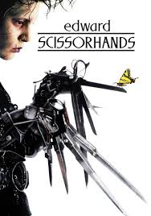
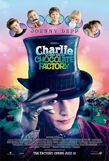

SPOTSTAR - JOHNNY DEPP
Johnny Depp is one of the most versatile and charismatic actors in modern cinema. Known for his ability to completely transform into his characters, he has built a career out of playing eccentric and deeply layered roles. He began his rise to fame in the late 1980s and became a household name with his unique portrayal of characters that stood outside the norm. Depp's collaboration with director Tim Burton led to some of his most iconic performances, including roles in Edward Scissorhands, Sweeney Todd, and Sleepy Hollow. He gained global fame for playing Captain Jack Sparrow in the Pirates of the Caribbean series, bringing humor, unpredictability, and charm to the role. Beyond his blockbusters, he has also taken on more serious and artistic films, showing his range and commitment to his craft. Depp is known for immersing himself fully in his characters, often drawing inspiration from real-life figures and music. His off-screen life has attracted significant media attention, but his passion for acting has remained a constant. With a career spanning decades, Johnny Depp has left a lasting mark on Hollywood. He continues to be a figure of fascination for both fans and critics alike, admired for his originality and bold choices.
POPULAR FILMS




